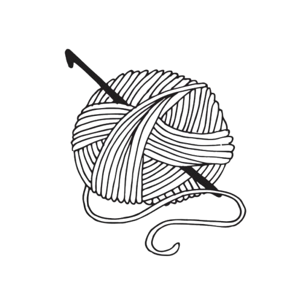
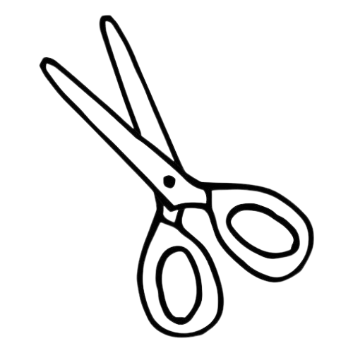
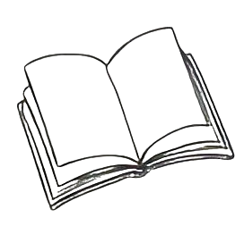

Hello! I'm Dieuwertje
I'm a recent graduate from University College Roosevelt in physics and computer science with a minor in electrical engineering. Currently, I'm in my gap year before continuing my master in (hopefully) quantum engineering. In the first half of my gap year, I lived in Bologna and am teaching myself web development.
LinkedIn GitHubPersonal Data
Dieuwertje Maria Elisabeth de Beer
12 September 2004
Languages Spoken
Ducth (Native)
English (Fluent)
Hobbies & Interests
- Knitting & crocheting 
- Sewing 
- Reading 
- Painting

- Learning new skills
Resume
Programming Languages:
- Python (packages)
- Micropython
- HTML
- CSS
- JavaScript
- Java
- R (Tidyverse, Shiny)
- Arduino / C++
- Mathematica
Certificates:
IELTS (International English Lanuage Test)
Achieved in 2022
Skills
- LaTeX
- Canva
Education
University College Roosevelt
2022-2025
Bachelor of Science (honors, gpa = 3.3), with a minor in Electrical Engineering
Relevant subjects:
Data Science
Introduction to Data Science
Machine Learning
Robotics
Computer Science
Introduction to Programming
Artificial Intelligence
Topics in Computer Science
Physics
Introduction to Physics
Quantum Mechanics
Advanced Mechanics
Particle Physics
Electronics
Basic Electronics and Circuits
Control Theory
Signals and Systems
Erasmus College Zoetermeer
2016-2022
VWO diploma in Physics & Engineering / Biology & Health
Work Experiences:
Student Ambassador at UCR
(2024-2025)
Conducted campus tours for prospective students and represented university in conversations and events, including those with faculty and deans.
Childcare Provider
2018-2024
Responsible for the care, safety, and daily guidance of children.
Tutor at Haroon Bijles
2023
Provided online English tutoring to high school students through interactive video meetings.
Staff Member at Hotel de Nieuwe Doelen
2023
Responsible for checking in guests, serving breakfast and drinks, and carrying out cleaning duties to ensure an optimal guest experience.
Service Staff at Brasserie 1640
2022
Responsible for taking and serving orders, and waitressing for weddings.
Digital Archive Manager at Peutz
2020-2021
Responsible for scanning and digitally archiving company documents to support the digitization of the archive.
Field Hockey Coach at Mixed Hockey Club Zoetermeer
2018-2020
Provided training to youth teams, developed practice materials, and guided players in technique, tactics, and teamwork.
Relevant Academic Experiences:
Senior Project - Robotics
“Design and Implementation of an Autonomous Robot; Incorporating ESP-NOW Communication and Ultra-Wideband Radiolocation” During my senior project, I designed and built an autonomous robot capable of determining its position within a building using Ultra-Wideband (UWB) radiolocation. In addition, I implemented ESP-NOW communication, enabling the robot to efficiently exchange data wirelessly with other microcontrollers or robots.
Internship - Data Science
In the final year of my bachelor's degree, I completed an internship in which I developed a web application using R Shiny. This app automatically checks whether students meet all the requirements to graduate from University College Roosevelt (UCR).
Final Project - Machine Learning
For the Machine Learning course, I completed a final project in which I applied various machine learning models in Python to the CERN Subatomic Particles Dataset. The goal was to classify which particle was detected in a detector, with a focus on distinguishing between the Upsilon and J/psi particles, which have very similar masses.
Final Project - Artificial Intelligence
For the Artificial Intelligence course, I recreated the game Flappy Bird in Python using Pygame. I then developed three different AI agents that were able to play the game using simple heuristics.
Datafest - First Place
As part of a team of five, I participated in Zeeland Datafest, a 14-hour hackathon focused on solving societal challenges through data analysis. With transportation as the main theme, we analyzed several provided datasets and developed a solution that earned us first place.
Get in Touch!
Email me at: